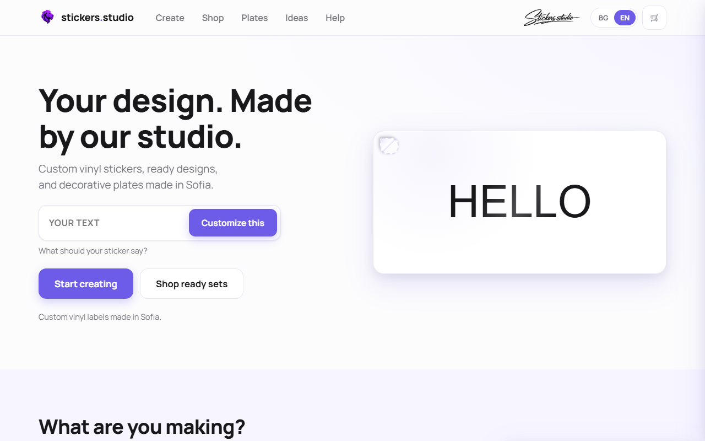
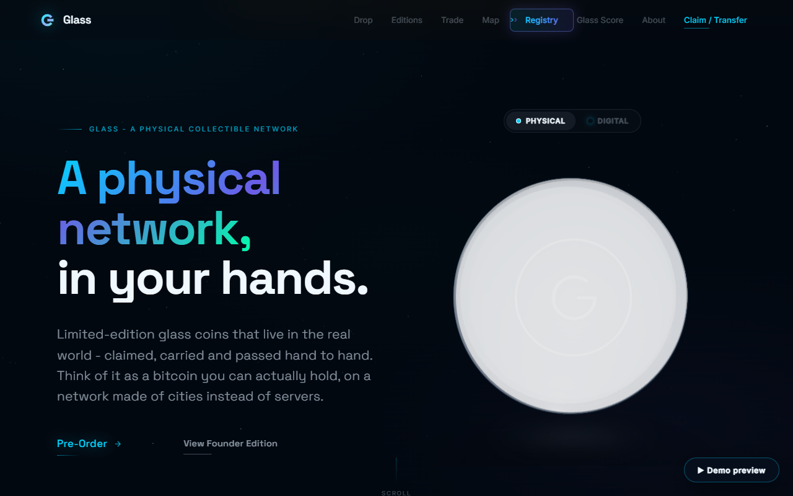
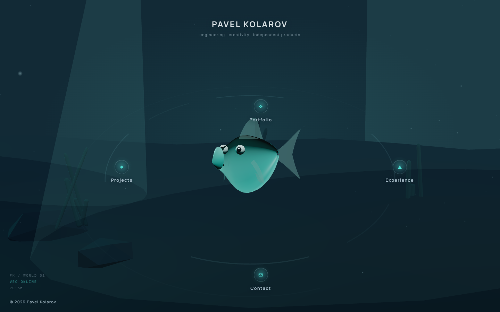

Stickers Studio
An independent design and customization venture - custom vinyl graphics, registration plates and wall art, from artwork through to the cutter.
Visit stickers.studio ↗A small, curated set of products - built, shipped and maintained.

An independent design and customization venture - custom vinyl graphics, registration plates and wall art, from artwork through to the cutter.
Visit stickers.studio ↗An application for running delivery operations: driver workflows, orders and routes, delivery status, customer details, cash and payment tracking, and operational reporting for fleet coordination.

A premium serial-numbered collectible network - limited-edition glass coins with their own product design and a public score/price interface.
Visit glass.trading ↗
This site - an independently designed interactive experience with a custom 3D character, radial navigation and a persistent companion. You are looking at it.
Source on GitHub ↗Pavel is an engineer who turns complex technical problems into clear, structured solutions. He works across software, enterprise infrastructure and technical operations, and picks up new tools and domains quickly.
Analytical and methodical, he is comfortable owning a problem end to end - investigating, documenting and seeing it through with the right people.
Analytical problem solving · Root-cause analysis · Technical documentation · Design reviews · Risk management · Agile / Scrum
C · C++ · JavaScript · HTML / CSS · Git / GitHub (Java & Python at a basic, side-project level)
Enterprise server hardware · Hardware diagnostics · Root-cause analysis · System logs · Active Directory · Networking fundamentals · Troubleshooting
Jira · Confluence · ServiceNow · SAP ERP · Microsoft 365 · Microsoft Visio · Git / GitHub
Technical University of Berlin · 2019 - 2023
Robert Bosch · 2022 · six-month programme
Areas Pavel follows and wants to work in - not claimed professional experience.
Engineering and technical operations.


Open to new opportunities. The quickest way to reach me: